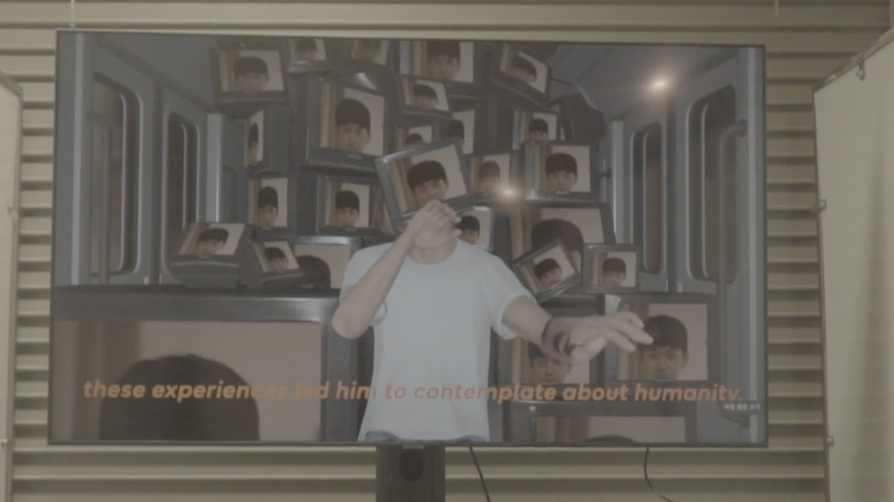
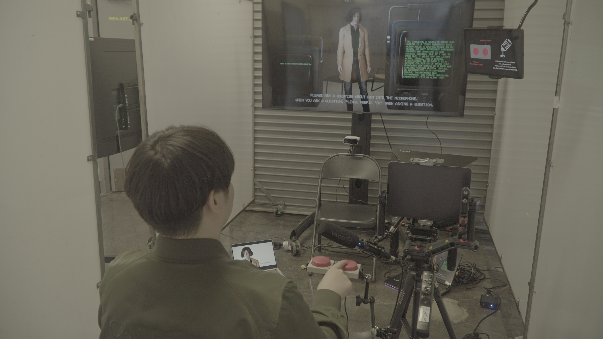
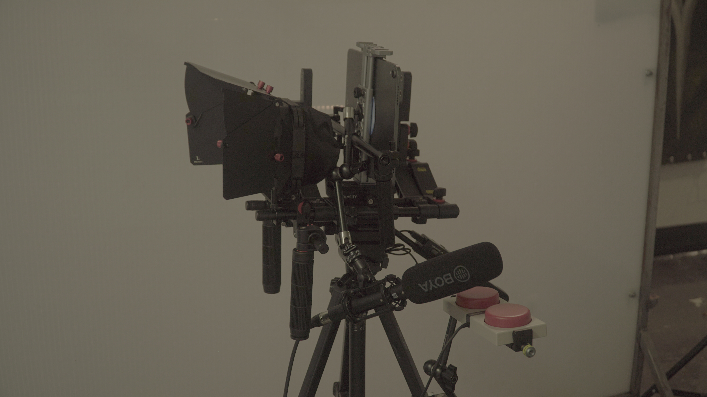
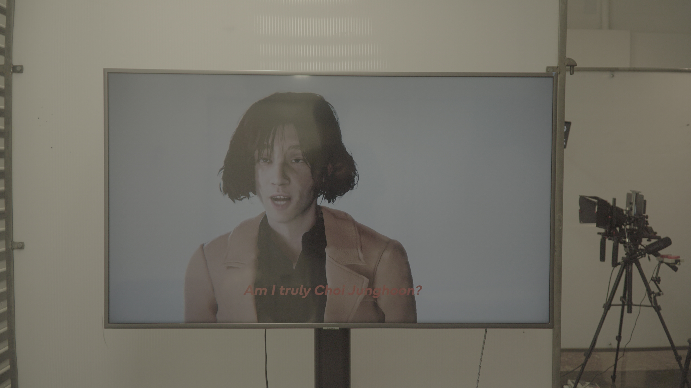
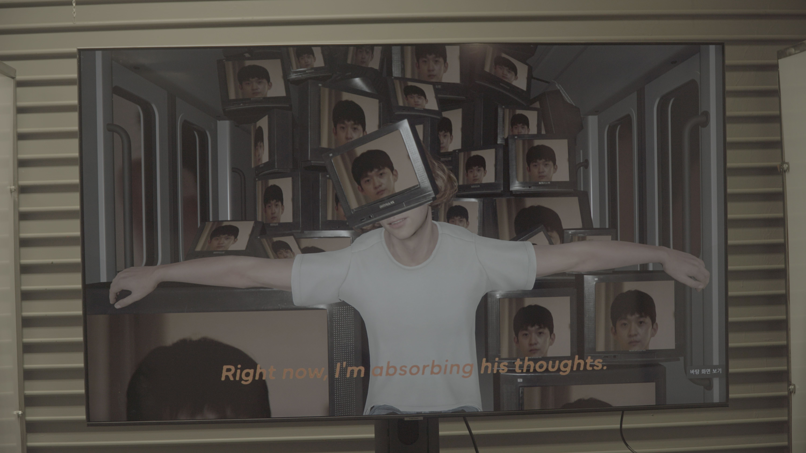

This project reconstructs the lead vocalist of JANNABI as a generative, interactive AI digital human. It examines how identity, emotion, and authorship can be algorithmically simulated, transforming a figure of admiration into computational presence.
Through real-time speech, gesture response, and persona-driven interaction, the AI explores the blurry line between replication and authenticity.
In an era where fandom, data, and simulation overlap, the project asks: "When emotion becomes code, can affection survive imitation?"
By reconstructing an admired artist, the work reframes parasocial devotion as a research methodology. The digital performer learns, speaks, and responds — turning fandom into feedback and making visible the emotional projection that fuels AI-human intimacy.


High-resolution portrait input processed through Character Creator 4 Headshot, refined in ZBrush, rigged and UV-unwrapped in Maya, then integrated into Unity for real-time rendering.
Interview and performance samples processed through ElevenLabs Instant Voice Cloning, enabling spontaneous speech generation that mimics tone, color, and cadence. Real-time lip-sync achieved through blendshape animation.
GPT-based persona model embedded into Unity. Audience speech → transcription → GPT response → ElevenLabs TTS → real-time facial animation. A coroutine-based pipeline ensures continuous, natural conversational flow.
Azure Kinect provides body tracking, gesture detection, and depth information, allowing the AI human to react physically to visitors — leaning, nodding, and mirroring engagement. Audience forms rendered as 3D point clouds.




The project explores AI-mediated affection and the co-construction of identity in machine-human systems. By merging machine learning, motion capture, and emotional projection, the digital Choi Jung-hoon becomes both a subject of empathy and a simulation of it.
This work rethinks authorship and digital intimacy in the era of computational performers — questioning what it means to know, love, or lose someone who was never entirely human.
Principal Investigator / Technical Director: Jonghoon Ahn
Institution: California Institute of the Arts
Tools: Unity · Character Creator 4 · ZBrush · Maya · ElevenLabs · Azure Kinect · GPT API